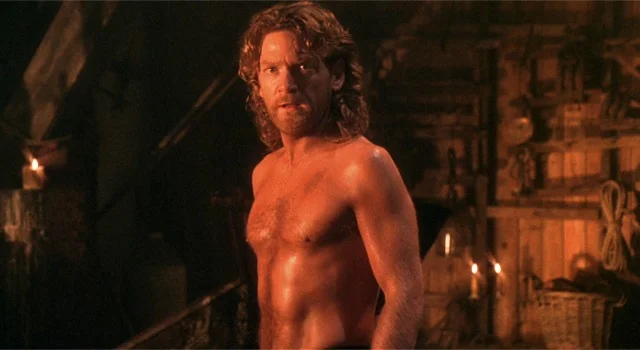

Mary Shelley's Frankenstein is known for having inaccurate adaptations of the classic novel. The first adaptation started out as a stage play, which Mary herself attended, but wasn't pleased with it, believing it was "not well managed," despite her appreciating her material being adapted and respected.
Regardless, it did bring the story to a wider audience and sparked interest in the Frankenstein mythos. Many adaptations after were either following the play, creating original stories, or parodies. However, that all changed with Shakespearean actor and director, Kenneth Branagh, taking the helm for this 1994 adaptation.
Branagh's direction brought a refreshing take on the story, while trying to be faithful to the original story. Well, mostly, as there were a lot of changes from the book which left some fans divided. I was among those who were left unsatisfied, even though, I had not read the story before. I did, however, watch some of the movies.
Before I get to what disapointed me, I just want to take the moment to actually share my thoughts on the performances and the production values. Kenneth Branagh no doubt is very talented and capable. Shakespeare is in this man's blood. He lives, breathes, and consumes the world of Shakespeare with his marvelous intensity and adaptations of Shakespearean plays.
The supporting cast also give wonderful performances, even if the writing is off. Helena Bonham Carter (who plays Elizabeth) was well cast as well. This kind of genres suits her nature. I mean, why do you think she was cast to play Bellatrix Lestrange in the Harry Potter films? Kenneth Branagh knew who to cast for each character. Well... mostly.
The production design and costumes were lavish and detailed, capturing the gothic atmosphere of the story effectively. It's very 1700s in style, with intricate details that bring the era to life. For example, the costumes, speech pattern, props, hell, even the hairstyles. The vibe is accurate.
However, despite these compliments, the film makes a lot of questionable choices that detract from the overall experience. Some plot points feel rushed or underdeveloped, and certain character motivations are unclear or inconsistent.
For example, why is Caroline Frankenstein (Cherie Lunghi) having a child in her 40s? That's risky, especially for the 1700s. Ultimately, that results in her death. Another issue is Victor and Elizabeth. I'm aware that in some verisons of the story, Elizabeth is not Victor's cousin, but what I don't know is if there even is a verison where Elizabeth is Victor's adoptive sister. Maybe in the 1831 edition? I'm not sure, but that decision is really weird. Did Mary Shelley or Kenneth Branagh think that would add depth? Did they predict pornos? It just felt off to me.
Perhaps the biggest issue I have is the casting of the monster. Don't get me wrong, Robert De Niro is one of the greatest actors of all time and one of my favorites, but this is not the kind of performance for him. I do appreciate the effort he put in. He really did try, but this just didn't work for me. This makes you think, did Victor follow the wrong directions and accidentally create Robert De Niro instead?
But those are just complaints. In no way is this a bad film; this is just something that needed a bit of work for me to actually enjoy. Kenneth Branagh's passion for the material is evident, and the film has its moments of brilliance. But I think he was trying to make this more like Shakespeare than Mary Shelley intended.